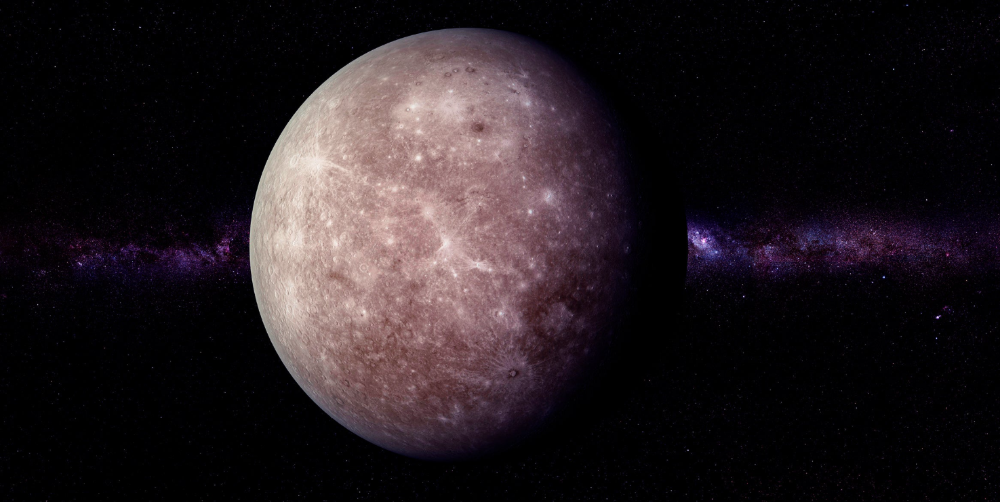

Mercury
Mercury is the closest planet to the Sun and the smallest planet in our solar system. It has a rocky surface covered with craters, similar to the Moon.
Because Mercury is so close to the Sun, temperatures can vary dramatically. It can be extremely hot during the day and very cold at night due to its lack of atmosphere.

Facts About Mercury
- Mercury is the smallest planet in the solar system.
- It is the closest planet to the Sun.
- It has no atmosphere to trap heat.
- Temperatures can reach over 400°C during the day.
- Mercury has no moons.